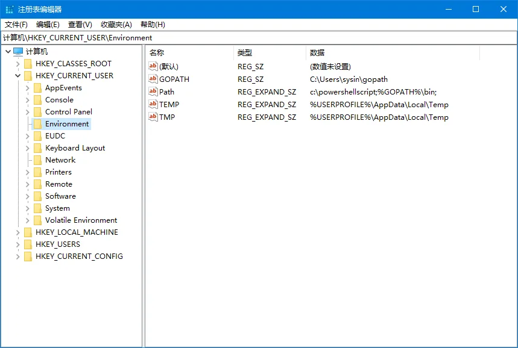

更新日期：Sun Nov 21 2021 11:50:00 GMT+0800，阅读量:
请访问原文链接：Windows 10 环境变量：通过 CMD 和 PowerShell 写入环境变量 查看最新版。原创作品，转载请保留出处。
作者主页：sysin.org
2022.06.24 更新：修正了批处理写入环境变量时，路径包含空格出现异常报错的问题。感谢读者朋友反馈！
1. 环境变量简介
环境变量 (environment variables) 是在操作系统中用来指定操作系统运行环境的一些参数。环境变量是在操作系统中一个具有特定名字的对象，它包含了一个或者多个应用程序所将使用到的信息。Windows 和 DOS 操作系统中的 path 环境变量，当要求系统运行一个程序而没有告诉它程序所在的完整路径时，系统除了在当前目录下面寻找此程序外，还应到 path 中指定的路径去找。用户通过设置环境变量，来更好的运行进程。
Environment variables：环境变量
User variables：用户变量
System variables：系统变量
环境变量可分为用户变量与系统变量两类，在注册表中都有对应的项。
1.1 用户变量
用户变量仅针对当前用户有效。
用户变量所在位置：HKEY_CURRENT_USER\Environment

1.2 系统变量
系统变量为全局变量，对所有用户有效。
系统变量所在位置：HKEY_LOCAL_MACHINE\SYSTEM\ControlSet001\Control\Session Manager\Environment
1.3 图形界面操作环境变量
图形界面（Windows 10）：此电脑 --> 属性 --> 高级系统设置 --> 高级 --> 环境变量…
可以直接查看、新建、编辑和删除环境变量（用户和系统），步骤比较简单，这里不再赘述。
⚠️ 文本编辑方式，在原有变量的基础上添加英文状态下的分号，然后添加路径名 (sysin)。不要删除原先的系统变量，只要用分号隔开，然后添加路径名，结尾也需要添加分号。
2. CMD 操作环境变量
2.1 查看环境变量
查看当前所有可用的环境变量 ：输入 set 即可查看。
查看某个环境变量 ：输入 set 变量名 即可，比如想查看 path 变量的值，即输入：set path
或者使用 echo %变量名% echo %path%，注意用户变量和系统变量都有 path，显示的是两者合集，系统变量在前面。
2.2 系统内置环境变量
系统内置的环境变量如下：
1 2 3 4 5 6 7 8 9 10 11 12 13 14 15 16 17 18 19 20 21 22 23 24 25 26 27 28 29 30 31 %ALLUSERSPROFILE% 局部 返回所有“用户配置文件”的位置。 %APPDATA% 局部 返回默认情况下应用程序存储数据的位置。 %CD% 局部 返回当前目录字符串。 %CMDCMDLINE% 局部 返回用来启动当前的 Cmd.exe 的准确命令行。 %CMDEXTVERSION% 系统 返回当前的“命令处理程序扩展”的版本号。 %COMPUTERNAME% 系统 返回计算机的名称。 %COMSPEC% 系统 返回命令行解释器可执行程序的准确路径。 %DATE% 系统 返回当前日期。使用与 date /t 命令相同的格式。由 Cmd.exe 生成。有关 date 命令的详细信息，请参阅 Date。 %ERRORLEVEL% 系统 返回最近使用过的命令的错误代码。通常用非零值表示错误。 %HOMEDRIVE% 系统 返回连接到用户主目录的本地工作站驱动器号。基于主目录值的设置。用户主目录是在“本地用户和组”中指定的。 %HOMEPATH% 系统 返回用户主目录的完整路径。基于主目录值的设置。用户主目录是在“本地用户和组”中指定的。 %HOMESHARE% 系统 返回用户的共享主目录的网络路径。基于主目录值的设置。用户主目录是在“本地用户和组”中指定的。 %LOGONSEVER% 局部 返回验证当前登录会话的域控制器的名称。 %NUMBER_OF_PROCESSORS% 系统 指定安装在计算机上的处理器的数目。 %OS% 系统 返回操作系统的名称。Windows 2000 将操作系统显示为 Windows_NT。 %PATH% 系统 指定可执行文件的搜索路径 (sysin)。 %PATHEXT% 系统 返回操作系统认为可执行的文件扩展名的列表。 %PROCESSOR_ARCHITECTURE% 系统 返回处理器的芯片体系结构。值: x86，IA64。 %PROCESSOR_IDENTFIER% 系统 返回处理器说明。 %PROCESSOR_LEVEL% 系统 返回计算机上安装的处理器的型号。 %PROCESSOR_REVISION% 系统 返回处理器修订号的系统变量。 %PROMPT% 局部 返回当前解释程序的命令提示符设置。由 Cmd.exe 生成。 %RANDOM% 系统 返回 0 到 32767 之间的任意十进制数字。由 Cmd.exe 生成。 %SYSTEMDRIVE% 系统 返回包含 Windows XP 根目录（即系统根目录）的驱动器。 %SYSTEMROOT% 系统 返回 Windows XP 根目录的位置。 %TEMP% and %TMP% 系统和用户 返回对当前登录用户可用的应用程序所使用的默认临时目录。有些应用程序需要 TEMP，而其它应用程序则需要 TMP。 %TIME% 系统 返回当前时间。使用与 time /t 命令相同的格式。由 Cmd.exe 生成。有关 time 命令的详细信息，请参阅 Time。 %USERDOMAIN% 局部 返回包含用户帐户的域的名称。 %USERNAME% 局部 返回当前登录的用户的名称。 %UserProfile% 局部 返回当前用户的配置文件的位置。 %WINDIR% 系统 返回操作系统目录的位置。
2.3 set 设置环境变量（临时）
添加或者修改环境变量 ：set 变量名=变量内容
1 2 3 4 5 6 # 设置变量 tmp 的值为 d:\tmp set tmp=d:\tmp # 设置变量 tmp 的值为 c:\tmp set tmp=c:\tmp # 上述已经设置 tmp 的值，这里会直接覆盖原有值
设置为空 ：set 变量名=
给变量追加内容 : set 变量名=%变量名%;变量内容
比如给 path 变量添加一个路径
即可将 d:\go 添加到 path 中，再次执行 set path=%path%;c:\tmp，那么，使用 set path 语句来查看的时候，将会有：d:\go;c:\tmp，而不是只有 c:\tmp。
注意，只在当前命令行窗口起作用。因此在图形界面的环境变量无法查看到。
2.4 setx 写入永久环境变量
setx 用法：
可以看到 setx 与 set 不同，不需要 “=”，其他语法比较类似，详细用法请点击命令名称查看官方文档。
2.5 通过写注册表设置环境变量
set 命令对环境变量操作只对当前会话有效，并没有保存更改，持久化设置环境变量，也可以通过修改注册表来实现。
环境变量所在注册表位置如下：
示例：新建和追加环境变量 ：
这里以 go 语言环境变量配置为例：
图形界面（Windows 10）：此电脑 --> 属性 --> 高级系统设置 --> 高级 --> 环境变量…
用户变量：
新建：GOPATH = %UserProfile%\gopath (例如：当前用户是 C:\Users\Administrators)
PATH 变量增加一条 %GOPATH%\bin
系统变量：
新建：GOROOT = C:\go
PATH 增加了一条 %GOROOT%\bin
1 2 3 4 5 6 7 8 9 10 11 12 13 14 15 16 17 18 19 20 21 22 23 24 25 26 27 28 29 30 31 32 ::用户变量所在位置：`HKEY_CURRENT_USER\Environment` set USERregpath=HKEY_CURRENT_USER\Environment ::系统变量所在位置：`HKEY_LOCAL_MACHINE\SYSTEM\ControlSet001\Control\Session Manager\Environment` set MACHINEregpath=HKEY_LOCAL_MACHINE\SYSTEM\CurrentControlSet\Control\Session Manager\Environment ::用户环境变量 ::新建 reg add "%USERregpath%" /v "GOPATH" /t REG_SZ /d "%UserProfile%\gopath" /f ::PATH 追加 ::查询原有 PATH 的值 for /F "tokens=3*" %i in ('reg query "%USERregpath%" /v "path" 2^>nul') do echo %i for /F "tokens=3*" %i in ('reg query "%MACHINEregpath%" /v "path" 2^>nul') do echo %i ::在 .bat 或者 .cmd 批处理文件中，%i 应该写成 %%i for /F "tokens=3*" %%i in ('reg query "%USERregpath%" /v "path" 2^>nul') do echo %%i for /F "tokens=3*" %%i in ('reg query "%MACHINEregpath%" /v "path" 2^>nul') do echo %%i for /F "tokens=3*" %i in ('reg query "%USERregpath%" /v "path" 2^>nul') do ( set USERpath=%i) echo USERpath=%USERpath% reg add "%USERregpath%" /v "Path" /t REG_EXPAND_SZ /d ""%USERpath%"%GOPATH%\bin;" /f ::经过测试，巨硬 A3 的不同 Windows 10 版本的 PATH 变量竟然写法不一样，有的以分号结尾，有的没有分号。所以命令还是要加上分号分割，结尾分号取消 reg add "%USERregpath%" /v "Path" /t REG_EXPAND_SZ /d "%USERpath%;%GOPATH%\bin" /f ::系统环境变量 ::新建 reg add "%MACHINEregpath%" /v "GOROOT" /t REG_SZ /d "C:\go" /f ::PATH 追加 for /F "tokens=3*" %i in ('reg query "%MACHINEregpath%" /v "path" 2^>nul') do ( set MACHINEpath=%i) echo MACHINEpath=%MACHINEpath% reg add "%MACHINEregpath%" /v "Path" /t REG_EXPAND_SZ /d "%MACHINEpath%;%GOROOT%\bin" /f
写成批处理（保存为 .bat 或者 .cmd 文件）
1 2 3 4 5 6 7 8 9 10 11 12 13 14 15 16 17 18 19 20 21 22 23 24 25 26 27 28 29 30 31 32 33 34 35 36 37 38 39 40 41 42 43 44 45 46 47 48 49 50 51 52 53 ::From: www.sysin.org ::OS 环境: Windows 10 (Include Server 2016/2019/2022) @echo off ::用户变量所在位置：`HKEY_CURRENT_USER\Environment` set USERregpath=HKEY_CURRENT_USER\Environment ::系统变量所在位置：`HKEY_LOCAL_MACHINE\SYSTEM\ControlSet001\Control\Session Manager\Environment` set MACHINEregpath=HKEY_LOCAL_MACHINE\SYSTEM\CurrentControlSet\Control\Session Manager\Environment color 17 echo. echo ===================================================== echo Go 环境变量设置 echo ===================================================== echo. set /P EN=请按 回车键 确认设置开始! echo. ::用户环境变量 ::处理路径有空格异常，增加一句 set set GOPATH=%UserProfile%\gopath echo 新建用户环境变量 GOPATH=%GOPATH% reg add "%USERregpath%" /v "GOPATH" /t REG_SZ /d "%GOPATH%" /f echo. echo 增加用户环境变量 PATH=%GOPATH%\bin for /F "tokens=3*" %%i in ('reg query "%USERregpath%" /v "path" 2^>nul') do (set USERpath=%%i) echo USERpath=%USERpath% ::reg add "%USERregpath%" /v "Path" /t REG_EXPAND_SZ /d "%USERpath%;%GOPATH%\bin" /f ::若要保持变量 %GOPATH% 为变量名称而不是变量实际值增加 %% reg add "%USERregpath%" /v "Path" /t REG_EXPAND_SZ /d "%USERpath%;%%GOPATH%%\bin" /f echo. ::系统环境变量 ::处理路径有空格异常，增加一句 set set GOROOT=C:\go echo 新建系统环境变量 GOROOT=%GOROOT% reg add "%MACHINEregpath%" /v "GOROOT" /t REG_SZ /d "%GOROOT%" /f echo. echo 增加系统环境变量 PATH=%GOROOT%\bin for /F "tokens=3*" %%i in ('reg query "%MACHINEregpath%" /v "path" 2^>nul') do (set MACHINEpath=%%i) echo MACHINEpath=%MACHINEpath% ::reg add "%MACHINEregpath%" /v "Path" /t REG_EXPAND_SZ /d "%MACHINEpath%;%GOROOT%\bin" /f ::若要保持变量 %GOROOT% 为变量名称而不是变量实际值增加 %% reg add "%MACHINEregpath%" /v "Path" /t REG_EXPAND_SZ /d "%MACHINEpath%;%%GOROOT%%\bin" /f echo. echo ************ Go 环境变量设置结束! *********** echo. echo 请按 任意键 退出! pause> nul
3. Powershell 操作环境变量
3.1 Powershell 设置环境变量（临时）
查看环境变量 ：
PowerShell 把所有环境变量的记录保存在 env: 虚拟驱动中，ls env: 命令可以列出所有环境变量。根据环境变量的名称就可以使用 $env:name 访问。
1 2 3 4 5 6 7 8 9 10 11 12 13 14 15 16 17 18 19 20 21 22 23 24 25 26 27 28 29 30 31 32 33 34 35 36 37 38 39 40 41 42 PS > ls env:Name Value ---- ----- ALLUSERSPROFILE C:\ProgramData APPDATA C:\Users\Administrator\AppData\Roaming CLIENTNAME SAMBP CommonProgramFiles C:\Program Files\Common Files CommonProgramFiles(x86) C:\Program Files (x86)\Common Files CommonProgramW6432 C:\Program Files\Common Files COMPUTERNAME SYSIN-NJ ComSpec C:\Windows\system32\cmd.exe DriverData C:\Windows\System32\Drivers\DriverData GOPATH C:\Users\Administrator\go HOMEDRIVE C: HOMEPATH \Users\Administrator LOCALAPPDATA C:\Users\Administrator\AppData\Local LOGONSERVER \\SYSIN-NJ NUMBER_OF_PROCESSORS 1 OS Windows_NT Path C:\Windows\system32;C:\Windows;C:\Windows\System32\Wbem;C:\Windows\System32\WindowsPo... PATHEXT .COM;.EXE;.BAT;.CMD;.VBS;.VBE;.JS;.JSE;.WSF;.WSH;.MSC;.CPL PROCESSOR_ARCHITECTURE AMD64 PROCESSOR_IDENTIFIER AMD64 Family 23 Model 49 Stepping 0 , AuthenticAMD PROCESSOR_LEVEL 23 PROCESSOR_REVISION 3100 ProgramData C:\ProgramData ProgramFiles C:\Program Files ProgramFiles(x86) C:\Program Files (x86) ProgramW6432 C:\Program Files PSModulePath C:\Users\Administrator\Documents\WindowsPowerShell\Modules;C:\Program Files\WindowsPo... PUBLIC C:\Users\Public SESSIONNAME RDP-Tcp SystemDrive C: SystemRoot C:\Windows TEMP C:\Users\ADMINI~1 \AppData\Local\Temp\2 TMP C:\Users\ADMINI~1 \AppData\Local\Temp\2 USERDOMAIN SYSIN-NJ USERDOMAIN_ROAMINGPROFILE SYSIN-NJ USERNAME Administrator USERPROFILE C:\Users\Administrator windir C:\Windows
可以参考 CMD 中的变量，将 CMD 中的 %变量名% 替换为 PowerShell 的格式 $env:变量名。
比如 CMD 中的 %windir% 替换成 PowerShell 就是 $env:windir：
1 2 PS > $env:windir C:\Windows
在比如 CMD 中的 %USERNAME% 替换成 PowerShell 就是 $env:USERNAME：
1 2 PS > $env:USERNAME Administrator
PowerShell 环境变量也可以象其它变量那样使用。比如直接解析到文本中。
1 2 3 4 5 PS > $env:ProgramFiles C:\Program Files PS > "Installation dir is $env:ProgramFiles \sysin" Installation dir is C:\Program Files\sysin
小技巧：查看 path 的特殊方法
1 2 3 4 PS > (type env:path) -split ';' PS > (type env:path) -split ';' | sls bin
创建或者更新环境变量 ：
语法：$env:变量名称=“变量值”
如果原有变量名称已经存在则覆盖
1 2 3 4 5 6 7 8 PS > $env:Test1 ="sysin.org" PS > $env:Test2 ="www.sysin.org" PS > ls env:Test*Name Value ---- ----- Test1 sysin.org Test2 www.sysin.org
删除环境变量 ：
语法：del env:变量名称。例如要删除环境变量中的 windir：
1 2 PS > del env:windirPS > $env:windir
不用担心，这里跟 set 操作环境变量一样，只对当前会话有效。
追加环境变量 ：
$env:变量名称=“$env:变量名称;变量值”
比如，常见的在 PATH 后面追加一条
1 $env:Path ="$env:Path ;C:\sysin"
3.2 PowerShell 持久化操作环境变量
上述对于环境变量的操作只会影响当前 PowerShell 会话，并没有更新在系统上，所以这里也没有区分"用户变量"和"系统变量"，操作的是两者的合集。
要写入环境变量到系统中，需要使用 .NET 方法 [environment]::SetEnvironmentvariable 操作环境变量。
首先我们看看如何分别查看"用户变量"和"系统变量"中的 “PATH”。
1 2 3 4 5 6 7 8 9 10 11 PS > [environment ]::GetEnvironmentvariable("Path" , "User" )c:\powershellscript C:\Users\Administrator\AppData\Local\Microsoft\WindowsApps; PS > [environment ]::GetEnvironmentvariable("Path" , "Machine" )C:\Windows\system32;C:\Windows;C:\Windows\System32\Wbem;C:\Windows\System32\WindowsPowerShell\v1.0 \;C:\Windows\System32\OpenSSH\; C:\Windows\system32;C:\Windows;C:\Windows\System32\Wbem;C:\Windows\System32\WindowsPowerShell\v1.0 \;C:\Windows\System32\OpenSSH\
好在写入环境变量的时候，两个分号也没有问题，所以在追加环境变量的时候原有变量值以分号分割，结尾不用分号为妥。
写入环境变量 ：
1 2 3 4 5 [environment ]::SetEnvironmentvariable("变量名称" , "变量值" , "User" ) [environment ]::SetEnvironmentvariable("变量名称" , "变量值" , "Machine" )
示例：新建和追加环境变量 ：
这里以 go 语言环境变量配置为例：
图形界面（Windows 10）：此电脑 --> 属性 --> 高级系统设置 --> 高级 --> 环境变量…
用户变量：
新建：GOPATH = %UserProfile%\gopath (例如：当前用户是 C:\Users\Administrators)
PATH 变量增加一条 %GOPATH%\bin
系统变量：
新建：GOROOT = C:\go
PATH 增加了一条 %GOROOT%\bin
Powershell 实现如下：
1 2 3 4 5 6 7 8 9 10 [environment ]::SetEnvironmentvariable("GOPATH" , "$env:USERPROFILE \gopath" , "User" ) [environment ]::SetEnvironmentvariable("PATH" , "$ ([environment]::GetEnvironmentvariable(" Path", " User"));%GOPATH%\bin" , "User" ) [environment ]::SetEnvironmentvariable("GOROOT" , "C:\go" , "Machine" ) [environment ]::SetEnvironmentvariable("PATH" , "$ ([environment]::GetEnvironmentvariable(" Path", " Machine"));%GOROOT%\bin" , "Machine" )
更多：Windows 下载汇总
文章用于推荐和分享优秀的软件产品及其相关技术，所有软件默认提供官方原版（免费版或试用版），免费分享。对于部分产品笔者加入了自己的理解和分析，方便学习和研究使用。任何内容若侵犯了您的版权，请联系作者删除。如果您喜欢这篇文章或者觉得它对您有所帮助，或者发现有不当之处，欢迎您发表评论，也欢迎您分享这个网站，或者赞赏一下作者，谢谢！
☑️ 评论恢复，欢迎留言❗️敬请注册！点击 “登录” - “用户注册 ”（已知不支持 21.cn/189.cn 邮箱）。请勿使用联合登录（已关闭） 。

 支付宝赞赏
支付宝赞赏
 微信赞赏
微信赞赏